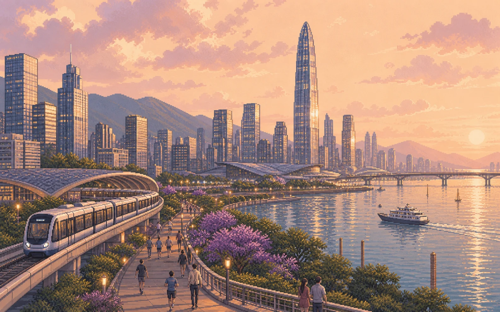

Four hotels
Futian in Shenzhen, central lakes in Guilin, Jiefangbei in Chongqing, and Chunxi Road / Taikoo Li in Chengdu.
8–21 November 2026 · 14 days
A rail-first journey through six places, told as one continuous scroll.
The route
Scroll the journey
On larger screens, each modern city or landscape portrait stays beside its days. On mobile, swipe the visual route once, then read without an image covering the itinerary.
Six stops in picturesSwipe the route →

Shenzhen
A soft landing
Land, transfer to Futian, and keep the first evening intentionally easy. If energy allows, step out for a relaxed dinner or a short wander before an early night.
Shenzhen
Electronics to street style
Spend a full day moving through Shenzhen’s most energetic shopping districts, from electronics and anime merchandise to fashion, snacks, and night-market browsing.
Shenzhen
Modern Shenzhen
Pair futuristic architecture with the bay and the old lanes of Nantou, then finish among the sculptural shelves of Zhongshuge at Happy Harbor.
Guangzhou
Shopping and Cantonese food
Ride the high-speed train to Guangzhou for dim sum and a focused shopping day between Tianhe and Beijing Road, then return to the same Shenzhen hotel.
Guilin
Into the karst landscape
Take the morning train inland, settle near Guilin’s central lakes, and ease into the scenery with an illuminated waterfront walk and a simple local dinner.
Xingping
Ancient lanes and river light
Make a day trip to Xingping for stone lanes, the famous Li River view, a hanfu photo session, and sunset among the karst peaks before returning to Guilin.
Guilin
Space to wander
Use this buffer day for Guilin’s classic riverside scenery, an optional cave visit, and an unhurried evening around the lakes and pedestrian streets.
Chongqing
Arrive for the night skyline
Travel north by direct train, check in around Jiefangbei, and save your energy for Chongqing after dark—when the riverfront, hills, and lanterns feel most dramatic.
Chongqing
A city built in layers
Follow Chongqing’s vertical streets from the Liziba monorail to Shibati and the river cableway, then finish with a proper hotpot dinner.
Chengdu
A gentler pace
Make the short rail hop to Chengdu, settle near Chunxi Road, and spend the afternoon easing into the city through Taikoo Li, shops, and Sichuan food.
Chengdu
A classic Chengdu day
Reach the panda base near opening time, then slow the pace at Wenshu Monastery with temple courtyards, tea, and traditional snacks.
Chengdu
Culture at Chengdu speed
Let the day unfold slowly through People’s Park, a traditional teahouse, Kuanzhai Alleys, and an evening Sichuan Opera performance.
Chengdu
A deliberately slow finale
Keep the final full day restorative with a long urban spa or bathhouse session, good food, and an easy last evening with no ambitious sightseeing.
Chengdu
Departure day
Keep the morning simple, confirm which Chengdu airport the flight uses, and leave a generous transfer buffer before beginning the journey home.
Before booking
Futian in Shenzhen, central lakes in Guilin, Jiefangbei in Chongqing, and Chunxi Road / Taikoo Li in Chengdu.
Use high-speed rail between every Chinese base and for both day trips. Exact November 2026 inventory opens closer to departure.
Confirm whether the flight home leaves from Tianfu (TFU) or Shuangliu (CTU) before arranging the final transfer.